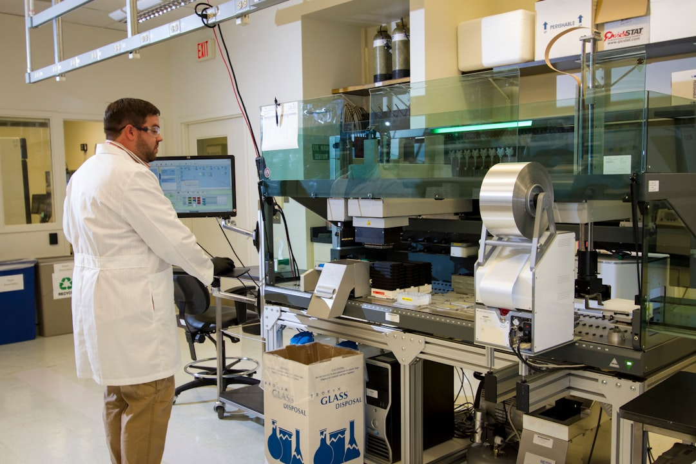

韓 AI·반도체·데이터센터 국가전략 선언, 소재 병목 3가지가 실효성 가른다

산업통상자원부는 2025년 첨단산업 소부장 기업 투자 지원 규모를 기존 대비 확대해 총 1,700억 원으로 확정했다. 지원 대상을 반도체·배터리 중심에서 방산·희토류·바이오·미래모빌리티를 포함한 6개 분야로 넓혔다. 중소·중견기업 투자액의 50%까지 직접 지원하는 구조다.
이재명 대통령은 '반도체·AI·데이터센터 삼각축'을 산업 전환의 핵심으로 공식 선언했다. 이와 함께 한국의 반도체산업 발전 전략 포럼에서는 AI 반도체 풀스택(설계→제조→패키징→소재) 전략이 논의됐고, 산업은행은 AI·반도체 스타트업 15곳을 집중 육성하는 계획을 발표했다.
전자신문·헬로티 등의 보도에 따르면, 소부장 정책의 효과를 제한하는 핵심 병목으로 세 가지가 반복적으로 지목된다. 첫째, 전략광물 회수 공정(갈륨·게르마늄·인듐 등)의 국내 기술 완성도 미흡. 둘째, 해외 고객 납품 요구 조건인 소재 인증 체계(IATF·AEC-Q 등) 대응 역량 부재. 셋째, 소재 공정 전문 인력 부족으로 기업 투자 집행 속도가 지연되는 구조다.
반도체·AI 삼각축 전략이 실제로 작동하려면 HBM4용 초순수·CMP 슬러리, GaN 에피층용 갈륨 고순도 정제, 데이터센터 냉각용 불활성 냉매 등 소재 레이어가 동시에 준비돼야 한다. 현재 이 소재들의 국산화율은 각각 30~60% 수준에 불과한 것으로 업계는 추정한다.
1,700억 원 소부장 지원은 방향은 맞지만 규모 면에서 역부족이다. 반도체 소재 단일 품목의 글로벌 인증 취득에 드는 비용이 통상 50~100억 원이고, 파일럿 라인 구축까지 포함하면 200~500억 원이 넘는다. 6개 분야를 동시에 지원하면 개별 기업이 받는 실질 지원은 수십억 원 수준에 그칠 수 있다.
AI 반도체 풀스택 전략에서 '소재'는 가장 긴 리드타임을 요구하는 레이어다. 칩 설계는 2~3년, 파운드리 공정 전환은 3~5년이지만, 소재 국산화는 인증부터 양산까지 최소 5~8년이 걸린다. 지금 투자하지 않으면 2030년대 AI 반도체 경쟁에서 소재 병목이 발목을 잡는다.
소부장 지원 확대의 직접 수혜는 중소·중견 소재 기업이다. 특히 희토류 회수 공정 기술을 보유한 기업(영풍·솔루스첨단소재 등)과 GaN 에피 소재 기업들이 1차 수혜 후보다. 투자액의 50% 직지원은 민간 투자 유인 효과가 실질적이다.
산업은행이 AI·반도체 스타트업 15곳 집중 육성을 선언한 것은 소재 분야 딥테크 스타트업에게 자금 조달 경로가 열린다는 의미다. 특히 소재 분야는 VC 투자가 기피해온 영역이어서 정책 금융의 역할이 더 크다.
6개 분야 동시 지원 확대는 역설적으로 '선택과 집중'이 약해진다는 의미다. 반도체 소재 한 분야에 집중하던 기존 구조보다 분산 투자로 효율이 낮아질 수 있다. 특히 인증·양산까지 긴 사이클이 필요한 소재 분야에서 중도 탈락 기업이 늘어날 리스크가 있다.
대형 소재 기업들은 1,700억 원 지원 구조에서 중소·중견 우선 기준 때문에 직접 수혜에서 배제될 가능성이 있다. 정책 혜택이 상대적으로 작은 대기업 소재 계열사들은 자체 투자 부담이 커진다.
소부장 기업 경영진이라면 이번 1,700억 원 지원 공고에서 '6개 분야'의 세부 기준을 정확히 확인해야 한다. 희토류가 편입됐다는 것은 갈륨·게르마늄·이트륨 관련 공정도 지원 대상이 될 수 있다는 신호다. 신청 전 자사 기술이 어느 분야 코드에 매칭되는지 산업부 고시를 직접 확인할 것.
AI 반도체 풀스택 전략을 공급망 관점에서 보면, 지금 가장 시급한 투자는 소재 인증 체계 구축이다. TSMC·삼성전자·SK하이닉스가 새로운 소재를 승인하는 데 걸리는 시간은 최소 18~36개월이다. 지금 인증 절차를 시작하지 않으면 2027~2028년 AI 반도체 수요 폭발기에 납품 기회를 잡을 수 없다.
실제 조달 현장에서는 — 정부 지원을 받은 소재 기업이 가장 많이 막히는 지점은 '고객사 승인'이다. 기술 개발 자금은 확보했지만 고객사 인증팀과 연결이 안 되는 경우가 반복된다. 이번 소부장 지원 사업에는 '매칭 프로그램'(소재 기업-수요 기업 직접 연결)을 필수 조건으로 붙이지 않으면 같은 실패가 반복된다.
이 포스팅은 쿠팡 파트너스 활동의 일환으로 수수료를 제공받습니다.